Simulation submission guide
To upload submissions into GPCRmd you must need an account. The creation of an account is explained in the account section.
Pre-submission
In the case that you already have an account you need to log in from Link. Here, you will need the credencials of your account to acces into the submission form.
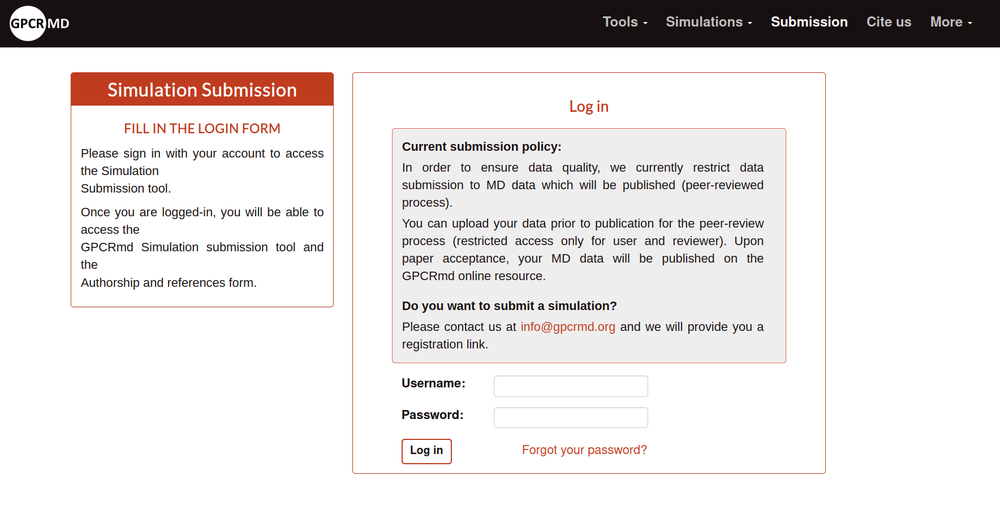{kind=link}
When you log in you will see the Pre-submission step. Here, it is explained very brief what the user need to consider before start the submission process:
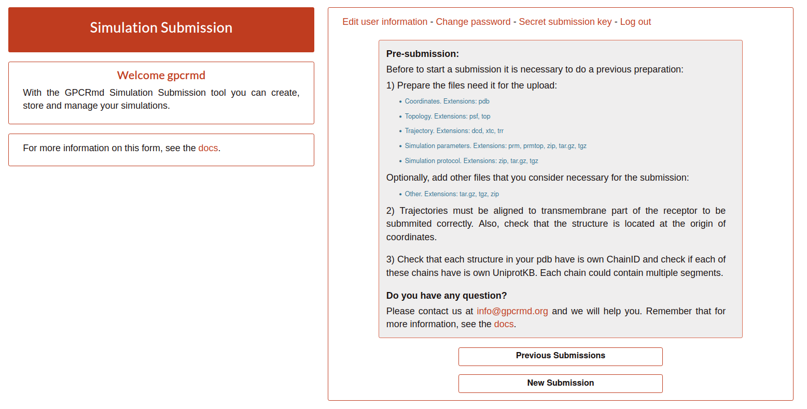{kind=link}
As it is mention, before start a submission it is necessary to prepare the files required to perform the submission:
Coordinates file: actual starting coordinates of the models. This pdb file should be a representation of your simulation at time 0, including all of its elements (membrane, solvation waters, etc.). Currently, GPCRmd accepts the next extensions: pdb.
ExampleTopology file: list of the atoms, masses, charges and connections between atoms. The Currently, GPCRmd accepts the next extensions: psf, top.
ExampleTrajectory file: sequential snapshots of simulated molecular system which represents atomic coordinates at specific time periods. Currently, GPCRmd accepts the next extensions: dcd, xtc, trr.
Simulation parameters: contains all the input parameters. Currently, GPCRmd accepts the next extensions: prm, prmtop, zip, tar.gz, tgz.
ExampleSimulation protocol: group of files used to launch the simulation. Necessary in case of replica. Currently, GPCRmd accepts the next extensions: zip, tar.gz, tgz.
Example
Optionally, if it is need to add other files that you consider important for the submission you can upload a compress file containing all additional data.
Other: files that are considered relevant for the submission. Currently, GPCRmd accepts the next extensions: tar.gz, tgz, zip.
Also, the user must to consider two important aspects:
Trajectories must be aligned to transmembrane part of the receptor to be submmited correctly. Also, check that the structure is located at the origin of coordinates.
The coordinates file MUST contain chainIDs and segmentIDs for all of the elements in the simulation. I insist on this point because the submission form might break later on if the PDB file is not ideal. Also, check here that each field in your PDB file is correct. The software we use to treat these files is rather picky, and again, might break if some field is not the required length.
Once, the files are checked and prepared you can click on “New Submission” to start with the step 1 of the submission form: General information.
Step 1: General Information
The first step is divided into three blocks. Next, it is explain each parameter:
A) System information
This block contains the main information used to tag the submission.
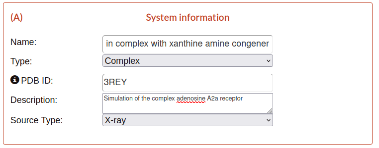
Name: title of the simulation used to describe the content of the submission.
Type: classify the simulation into a complex or an apoform.
PDB ID: protein data bank identifier of the structure which the simulations was based. This parameter is important for the next steps, guarantee that is correct.
Description: long text describing the simulation.
Source Type: source of obtaining of the protein structure.
{kind=link}
B) Simulation specifications
Instead of the previous block about system information, in this block is requested the specifications of the simulation.
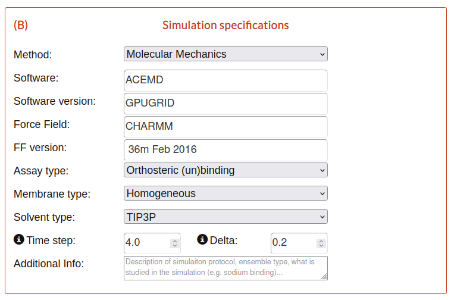
Method: methodology used in the simulation.
Software: name of the software used to perform the simulation.
Software version: version of the software.
Force field: force field used in the simulation.
FF version: version of the force field (FF).
Assay type: type of the assay of the simulation.
Membrane type: membrane type used in the simulation.
Solvent type: solvent type used in the simulation.
Time step: simulation integration step of the simulation (fs).
Delta: time lapse between frames in a trajectory file (ns).
Additional Info: like description in the block A, is additional information that you could include to explain better the specifications.
{kind=link}
C) Coordinates files
In this block, the user only needs to upload the simulated structure that contains the starting coordinates (.pdb file).
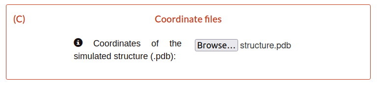{kind=link}
Then click on submit to move to the second step.
Step 2: Small Molecules
When the step 1 is submitted the system will analyze your structure uploaded. In this second step GPCRmd will list all the small molecules that it be found one by one as entries from 0 to N. Please, provide a detailed chemical description of all non-protein molecules in your system. This extensive information will help to provide a platform of well-characterized molecules for screening purposes to medicinal chemists and chemoinformaticians.
If GPCRmd have information about the small molecule you will see the next:
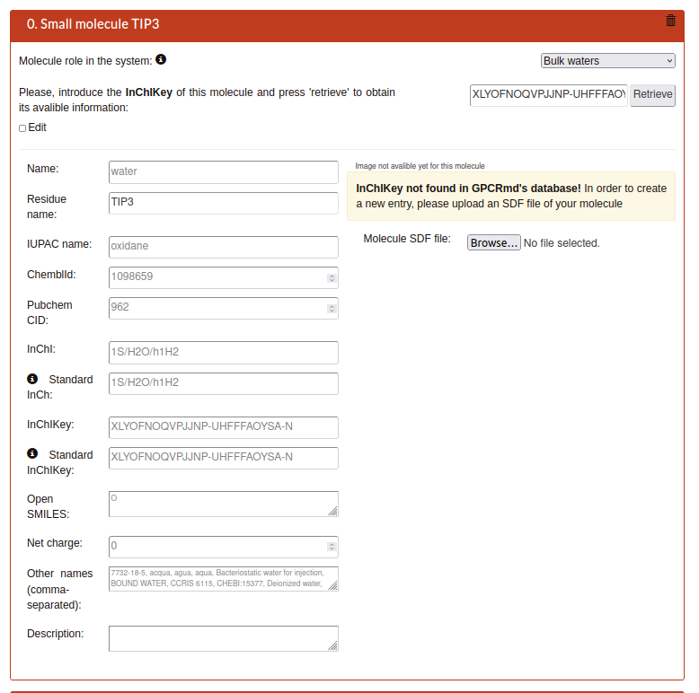{kind=link}
If not you can add the information with two ways:
Automatically using the retrieve box on the top writing the InChIKey in or,
{kind=link}
Manually using the Edit checkbox.
The parameters of each entry are:
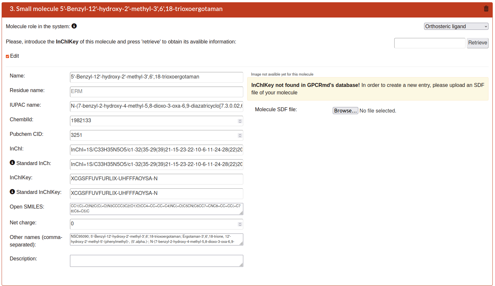
Name: Main name of the small molecule.
Residue name: Residue name.
IUPAC name: Name by the International Union of Pure and Applied Chemistry (IUPAC) as a standard method of naming organic chemical compounds.
ChemblId: identifier from the chemical database of bioactive molecules with drug-like properties.
PubchemCID: identifier from database of chemical molecules and their activities in biological assays Pubmed.
InChl: International Chemical Identifier (InChI) is a identifier for chemical substances, designed to provide a standard way to encode molecular information and to facilitate the search for such information in databases and on the web.
Standard InCh: InChi of the standard form of this molecule (should be the same as InChi, except if the submited molecule is an isomer).
InChlKey: is a fixed-length format directly derived from InChI. It is based on a strong hash (SHA-256 algorithm) of an InChI string.
Standard InChlKey:InChiKey of the standard form of this molecule (should be the same as InChiKey, except if the submited molecule is an isomer).
Open SMILES: identifier for the OpenSMILES database that is designed to facilitate exchange of chemical information.
Net charge: the total after taking account both positive and negative charges
Other names: Alias names.
Description: Detailed extra text about the molecule.
Molecule SDF file: SDF format file with the molecular image of the molecule as visual representation.
{kind=link}
Each entry can be removed using the trash icon on the top right of each entry.
Also, user can upload for each small molecule (non-protein) a ‘.sdf’ or ‘.mol’ file. A 2D chemical structure will be automatically displayed. Also, is important that the user indicate if the uploaded structure is a co-crystallized molecule or if it belongs to bulk.
If some small molecule is not found, the user can add manually a new entry with the click on the “+” button on the bottom of the panel corresponding to the last uploaded molecule to add information about another molecule in your system.
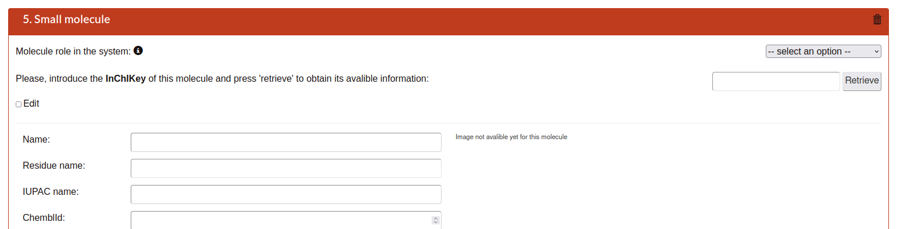{kind=link}
Then click on the submit button of the bottom to continue to the next step.
Step 3: Protein chains
In this step, like step 2, the tool will display all the chain that he found in the file uploaded in the step 1. Here, also the tool will perform an alignment with an Uniprot entry as reference to detect possible mutations. For this reason, is REALLY important to be sure that the chains are correct to upload correctly the submission.
Protein information
Like the step 2, you can add the information with two ways:
Automatically using the retrieve box on the top writing the UniProtKb in or,
{kind=link}
Manually using the Edit checkbox.
The parameters of each entry are:
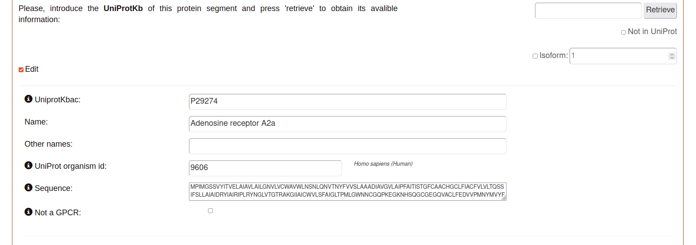
UniProtKbac: Uniprot id of this protein.
Name: Main name of the protein segment.
Other names: Alias or other names.
UniProt organism id: Uniprot taxon node of the specie this protein belongs to.
Sequence: sequence assigned to the UniprotKb.
Not a GPCR: check in case that the entry protein is not a GPCR.
{kind=link}
In case that the protein is not on Uniprot, you can use the checkbox option on the top right “Not in Uniprot”. Then the web did not ask about a UniprotKbac but the organism is obligatory.
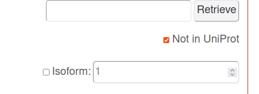{kind=link}
Segments
This part is determined by the chains that the tool detects on the structure file (.pdb). Here, is indicated some parameters related with the chain and the segments that are part of it:
PDB id: protein data bank identifier detailed in the step 1.
Source type: source of obtaining determined in the step 1.
ChainID: name of the chain detected in the pdb file.
SegmentID: segment name detected in the pdb file.
From resid: start residue id.
To resid: last residue id.
Bond: check means if this segment is bond with the previous one.
{kind=link}
If some chain is not detected, the user can add manually a new entry with the click on the “+” button on the bottom of the segments section.
Mutations
Here, the tool perform a alignment between the sequence of uniprot as reference with the sequence of the pdb. In this way, the user can determine the possible mutations or alterations in their sequences. There are two options:
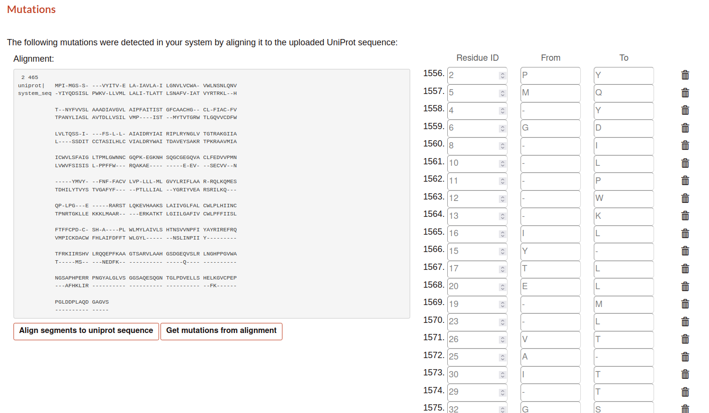
Align segments to uniprot sequence: perform the alignment.
Get mutations from alignment: determine the differences in the alignment and list them next to the alignment.
{kind=link}
The user can determine what mutations conserve in the submission process.
At the end, the user can add manually a new protein entry with the click on the “+” button on the bottom of the main section.
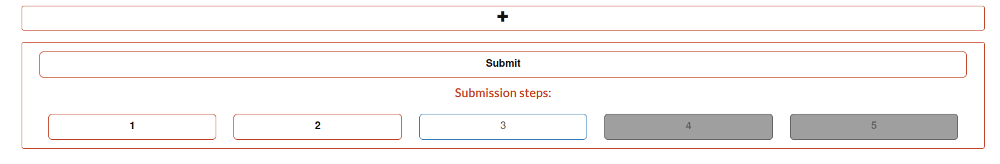{kind=link}
Step 4: Simulation files
The next step is to upload the files that in the pre-submission step was required to be checked and prepared.
Topology file: list of the atoms, masses, charges and connections between atoms. The Currently, GPCRmd accepts the next extensions: psf, top.
Trajectory file: sequential snapshots of simulated molecular system which represents atomic coordinates at specific time periods. The use can select more than one. Currently, GPCRmd accepts the next extensions: dcd, xtc, trr.
Simulation parameters: contains all the input parameters. Currently, GPCRmd accepts the next extensions: prm, prmtop, zip, tar.gz, tgz.
Simulation protocol: group of files used to launch the simulation. Necessary in case of replica. Currently, GPCRmd accepts the next extensions: zip, tar.gz, tgz.
Other: files that are considered relevant for the submission. Currently, GPCRmd accepts the next extensions: tar.gz, tgz, zip.
Note
Can you download example files in the previous step “Pre-submission”.
{kind=link}
When the user finished to upload the files it can be submitted. This step needs some extra time depending on the size of files uploaded into GPCRmd.
Step 5: References
As some of the previous steps, the user can add the information automatically, using the retrieve option with a doi, or write it manually.
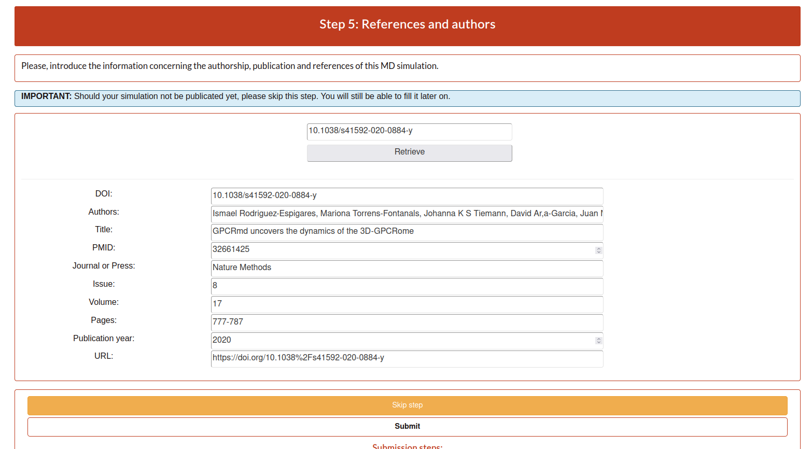
DOI: Digital Object Identifier, is a string of numbers, letters and symbols used to uniquely identify an article or document, and to provide it with a permanent web address.
Authors: name of the all authors involved in the publication separated by comma.
Title: the title of the publication.
PMID: pubmed identifier associated to the publication.
Journal or Press: name of the publisher.
Issue: issue.
Volume: volume.
Pages: pages.
Publication year: publication year.
URL: link associated to the publication.
{kind=link}
This step5 can be omitted temporarily, but please do not forget to fill it in once you have all the information about your publication. Also, all submissions sharing the same DOI will be provided with a summary page to include in the references of your paper. If you put a random token (e.g.: abysms) in the DOI field and submit it like that a page will also be generated, and you will be able to change it later.
Example: Link
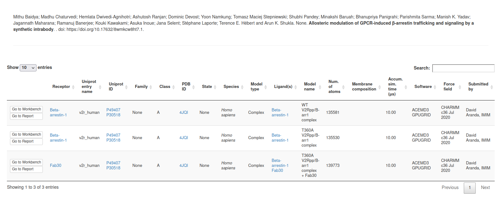{kind=link}
Submission summary
Once, the user submit the step 5 and all runs correctly, the page will show the summary of the whole process. Here, the user can check everything about the submission performed but it can not be edit from here. To edit the information, the user needs to go back to the step that wants to change. Also, the page provided the identifier of the submission and the dynamic into GPCRmd.
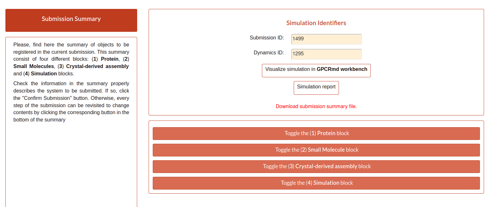{kind=link}
If the user click on the button “Visualize simulation in GPCRmd workbench”, the page will redirect the user to a previsualization of the structure in the viewer. As the submission is “non-published”, because the user needs to confirm and close the submission, the web will ask about the dynamic id and the secret key associted to the user to acces into the viewer.
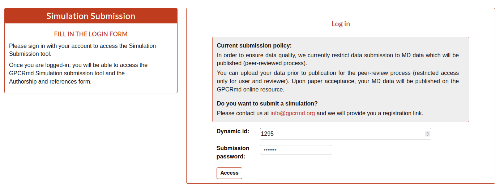{kind=link}
Indicating the correct values the user can access to the viewer.
Here, the user can see how the structure and the trajectories looks in GPCRmd. Remember that the GPCRmd toolkit is available for these structures that are precomputed every some period of time. Until these structures will not be published the user can not found these analisies because we need the open publication of these structures to be analyzed.
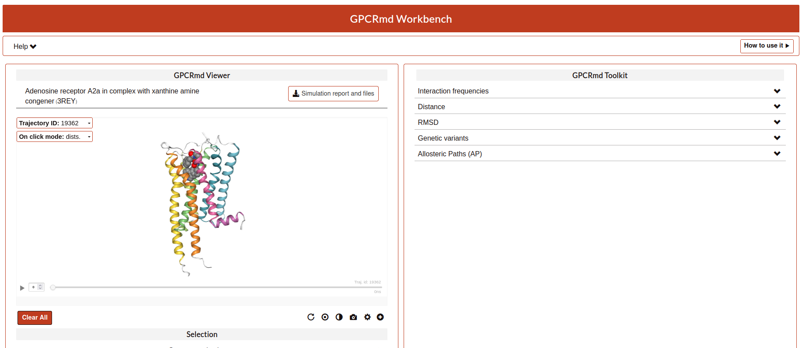{kind=link}
Also, the user have another button named “Simulation report”. Here, the user will be redirected to the report page where all the information about the submission is exposed.
First, the user can see the “Technical information” that is all the information detailed in the step 1 of the submission form and extra information calculated from the values aported by the user as the “Accumulated simulation time”. Also, it is shown the files associated to the submission that can be downloaded. And finally at the end of this section the user can see the reference associated to this submission.
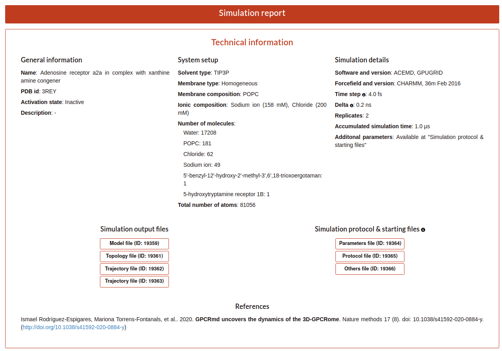{kind=link}
For the other part of the report the user can see the “Simulation components”. Here, it is exposed ligands, receptor, mutations, molecules as waters, ions or small molecules, like a summary of all components that user determined that are into the simulation in the step 2 and 3. Especially, the user can see a trajectory in the receptor box or a carousel of the small molecules at the bottom of the section.
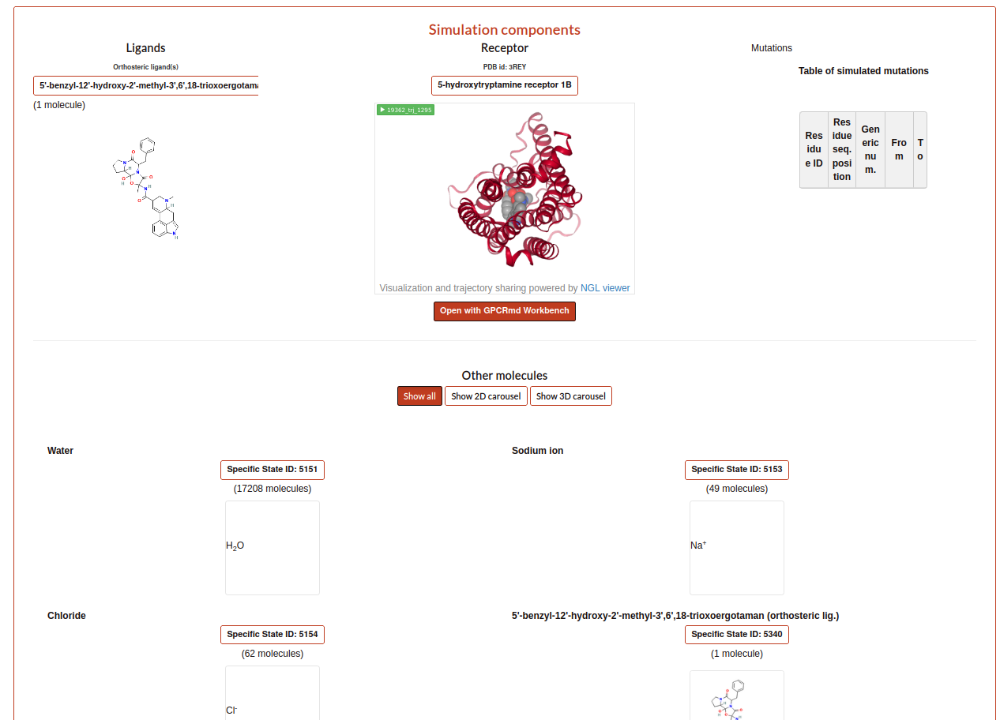{kind=link}
Returning to the main Submission summary, the web also display four blocks related with the submission.
The first block is related with the Protein information and shows a summary of all the information about it.
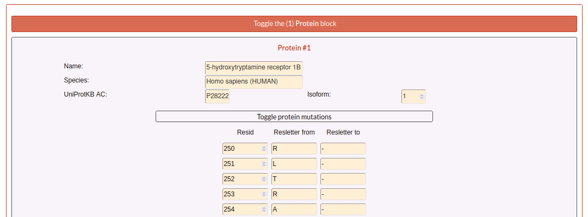{kind=link}
The second block is related with the Small molecule information.
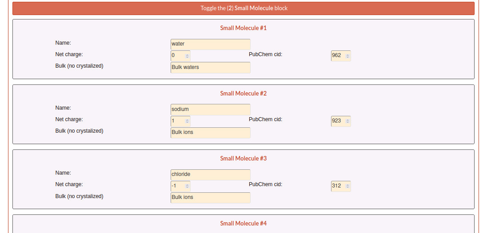{kind=link}
The third block is related with Crystal information.
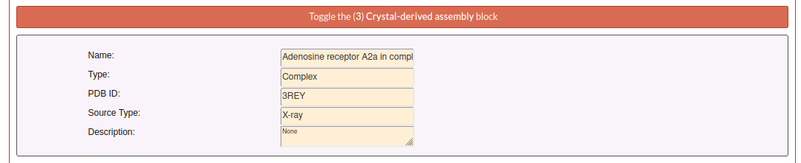{kind=link}
The fourth block contains two toggles: components and details, that contains more detailed information about the simulation.
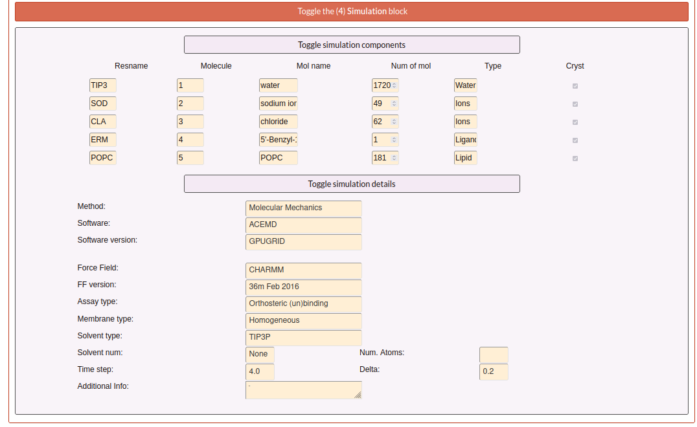{kind=link}
In case that the user wants to download all this information, in the first section of the report under the two buttons of the viewer and report pages you have a button named “Download submission summary file.”. If the user click here, it will automatically redirected to a txt page with all the summary information that the user can download.
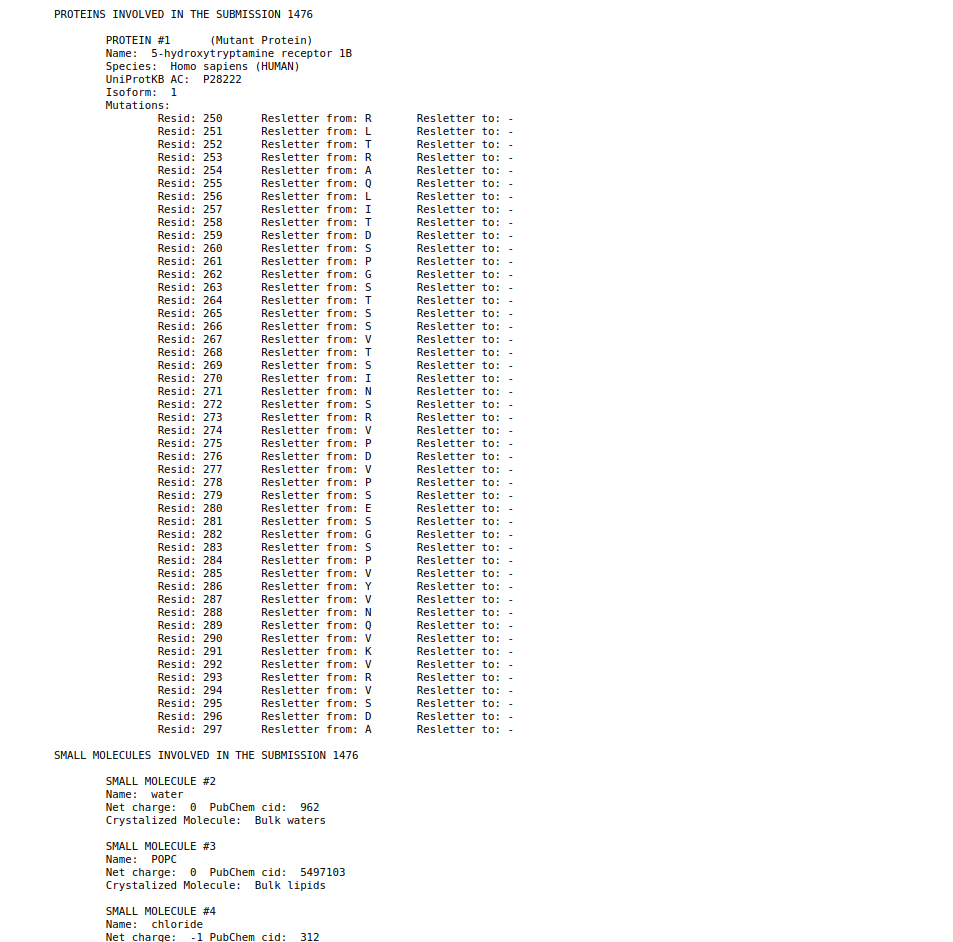{kind=link}
Submission list
In case that the user wants to return to some of the steps in the submission form, it is necessary from the “Submission” home.
Here, clicking on “Previous submissions” the user can see a list of all the submissions uploaded to GPCRmd. In this page, the user have 5 options:
View: access to the GPCRmd viewer displaying a visual of the simulation.
Report: access to the GPCRmd report displaying detailed information about the simulation.
Open: access to the submission form to edit the information of each of the steps.
Delete: delete the submission and all the files related.
Close: confirm that the submission is correct and is prepared to be published into GPCRmd and be analyzed.
Warning
The Close action is an irreversible process (check the example, the second submission id 1476 is closed and the user can only see the summary).*
{kind=link}